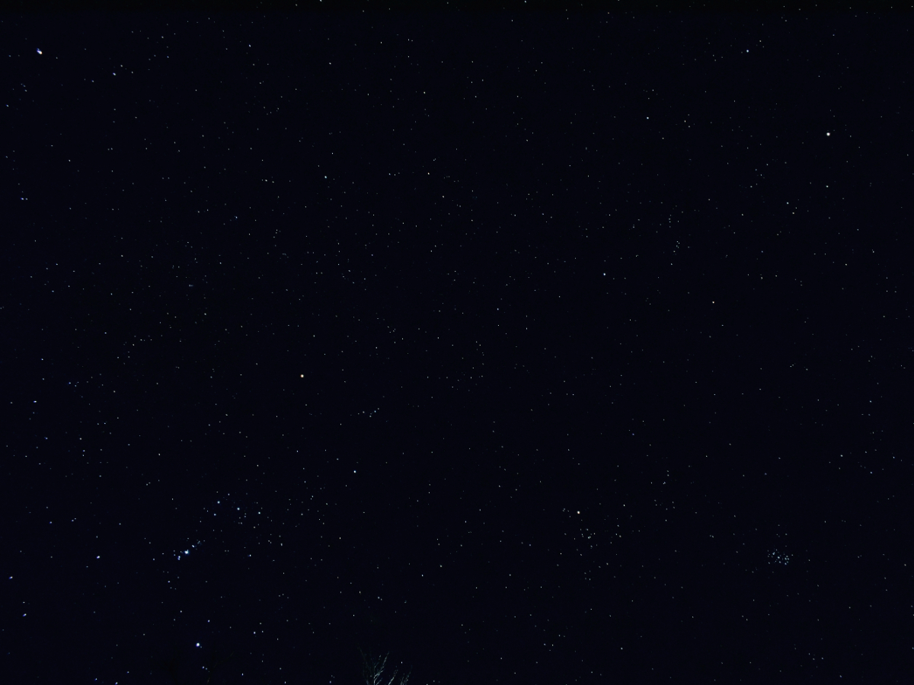
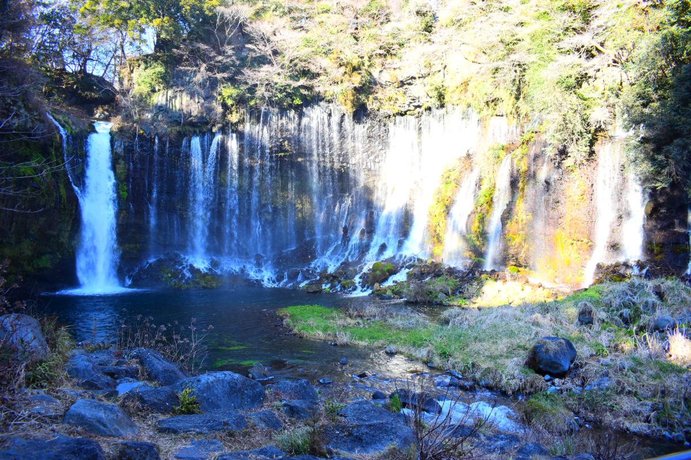
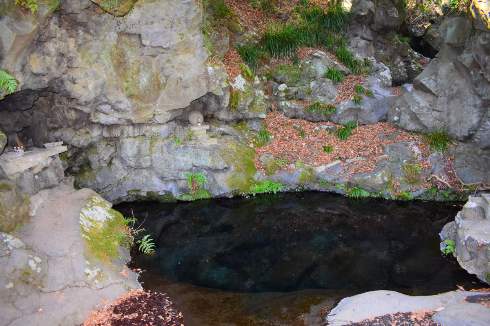
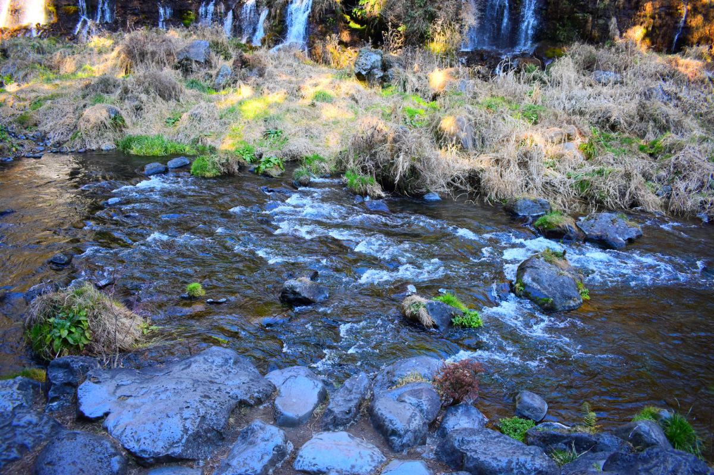
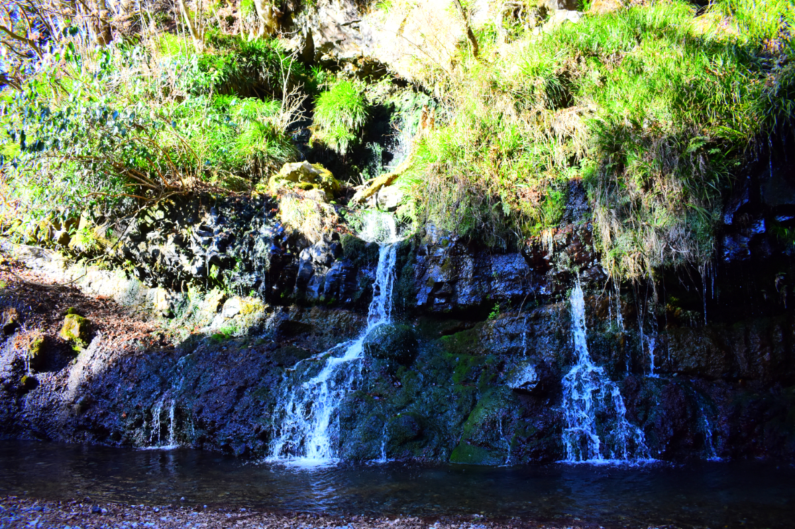
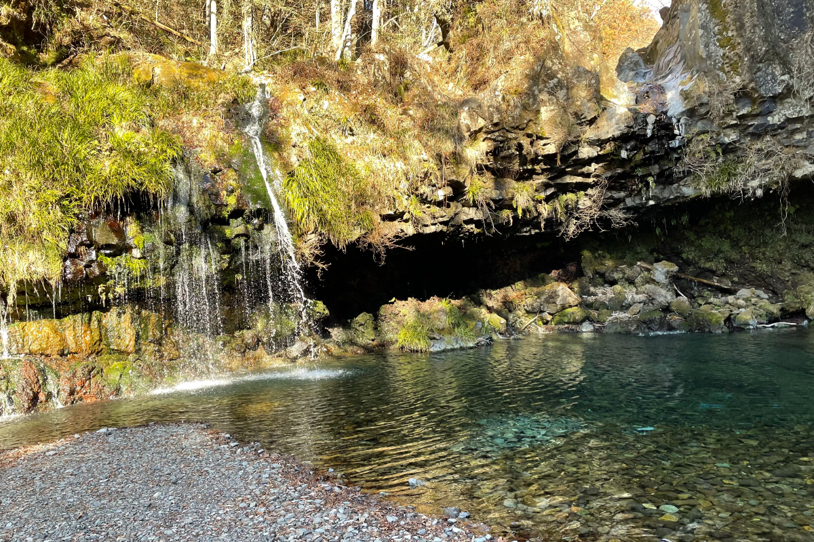
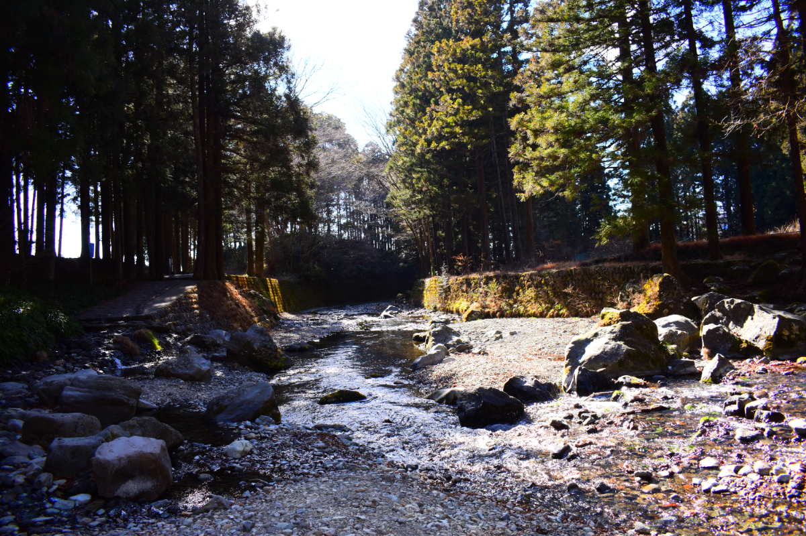

みずとであう -04
ゆらり、さらり、水は行く。温もり溢れるあの町へ

▲ 大自然に囲まれた富士宮は、空気が澄み渡っていて星も美しい。
富士宮北部に佇む幾つもの名瀑。全方向から水音が轟く神秘の空間。
写真ホバーまたはタップで説明文が表示されます。

『白糸の滝』 名前の通り、白い糸の様に透き通った水が溢れ出してきます。水の迫力を感じたいならイチオシ！

『『白糸の滝ーお鬢水』 源頼朝がこの水で髪を整えたというお話があります。鏡の代わりになる程濁りの無い水です。

『白糸の滝』 この近くに音止めの滝がありますが、残念ながら今は草木で殆ど見えません。名前の由来の曽我兄弟も面白い。曽我兄弟の隠れ岩等々…。

『陣馬の滝』 岩肌の彼方此方から水が流れており、大自然の神秘が感じられる場所。避暑地として夏は特に多くの人で賑わっています。足元の石に注意！

『陣馬の滝』 冬のお天気で写真右の本流が枯れていることも。水の力で綺麗な円状に岩が削られている光景を見ることができるのは逆にラッキーかも？

『陣馬の滝』 小石の合間を縫って行く水は、大きな川の一つとなります。またここから、新たな水と人の出会いが始まります。